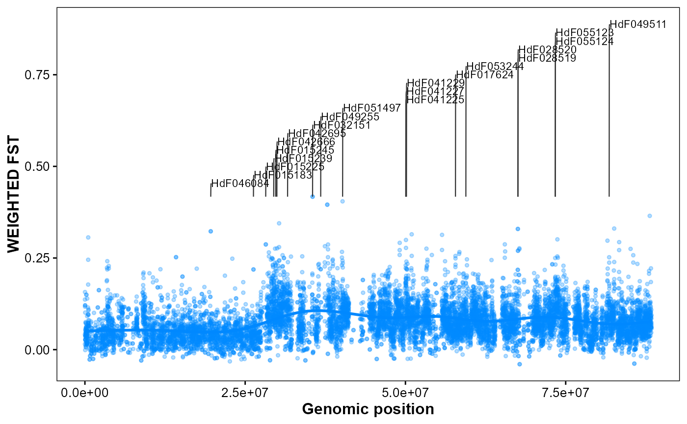

Plot genomic FST with Top-N gene annotations.
Usage
plot_snp_anno(
fst_file,
gff_file,
format = "auto",
chrom_id,
top_n = 20,
orientation = "vertical",
smooth_span = 0.5,
fst_color = "#0088ff",
point_size = 1,
point_alpha = 0.3,
label_size = 3,
connector_dx1 = 20000,
connector_dx2 = 40000,
gap_frac = 0.05
)Arguments
- fst_file
FST sliding window results. (CHROM, BIN_START, BIN_END, WEIGHTED_FST, N_VARIANTS.
- gff_file
Path to
GFF3/GTFfile as input.- format
Format of GFF3/GTF file. ("auto", "gff3", "gtf").
- chrom_id
Chromosome identifier ("chr1").
- top_n
Number of top genes to annotate. (20).
- orientation
Coordinate orientation. ("vertical", "horizontal").
- smooth_span
Span for local regression smoothing. (0.1).
- fst_color
Point color for FST. ("#0088ff").
- point_size
Point size. (1).
- point_alpha
Point alpha. (0.3).
- label_size
Text size for gene labels. (3).
- connector_dx1
First connector horizontal offset (bp). (2e4).
- connector_dx2
Second connector horizontal offset (bp). (4e4).
- gap_frac
Minimum vertical gap between labels (fraction of FST range). (0.05).
Examples
# Example data in GAnnoViz
fst_file <- system.file(
"extdata",
"example.fst",
package = "GAnnoViz")
gff_file <- system.file(
"extdata",
"example.gff",
package = "GAnnoViz")
# Chromosome FST with Top-20 gene annotations on chr11
plot_snp_anno(
fst_file = fst_file,
gff_file = gff_file,
format = "auto",
chrom_id = "chr2",
top_n = 20,
orientation = "vertical",
smooth_span = 0.5,
fst_color = "#0088ff",
point_size = 1,
point_alpha = 0.3,
label_size = 3,
connector_dx1 = 2e4,
connector_dx2 = 4e4,
gap_frac = 0.05
)
#> Import genomic features from the file as a GRanges object ...
#> OK
#> Prepare the 'metadata' data frame ...
#> OK
#> Make the TxDb object ...
#> OK
#> `geom_smooth()` using method = 'gam' and formula = 'y ~ s(x, bs = "cs")'
